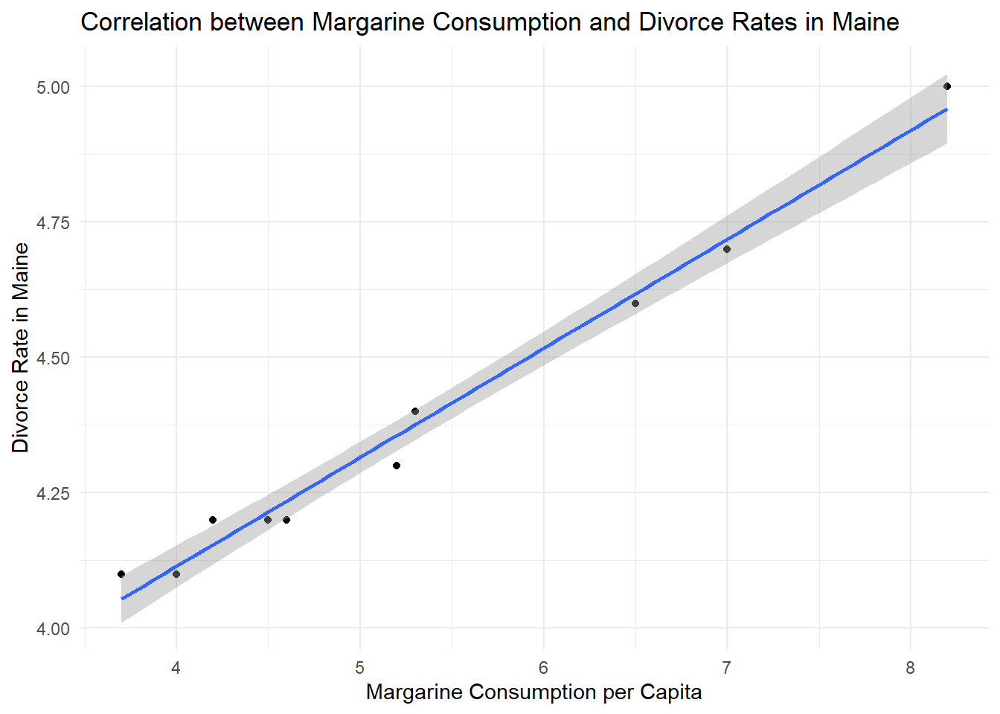
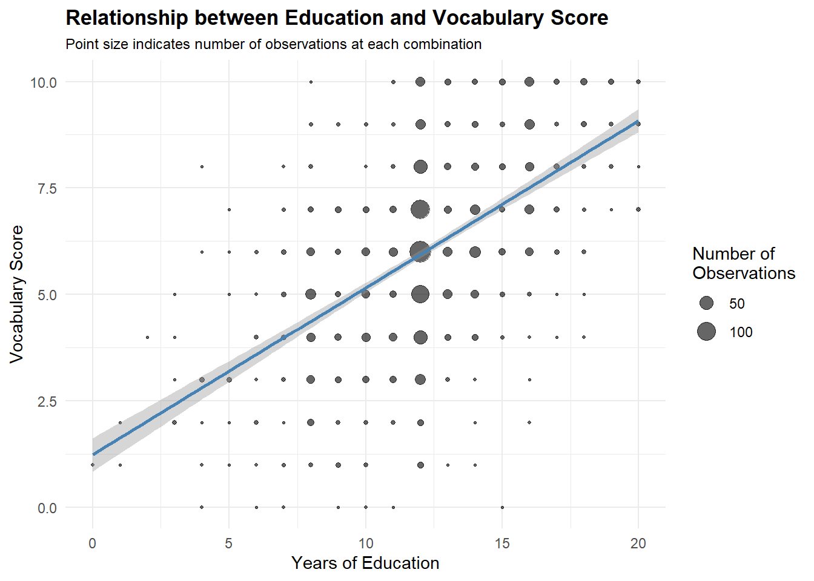
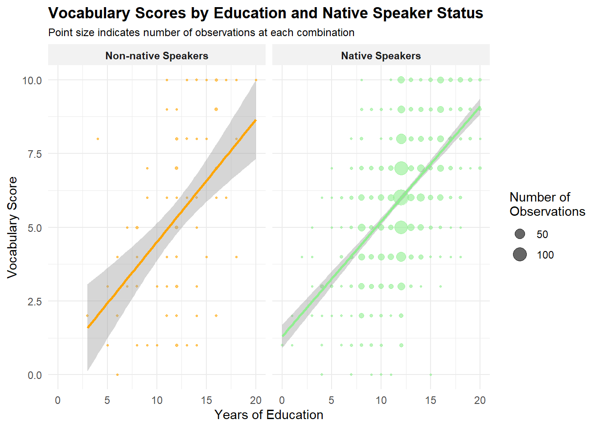
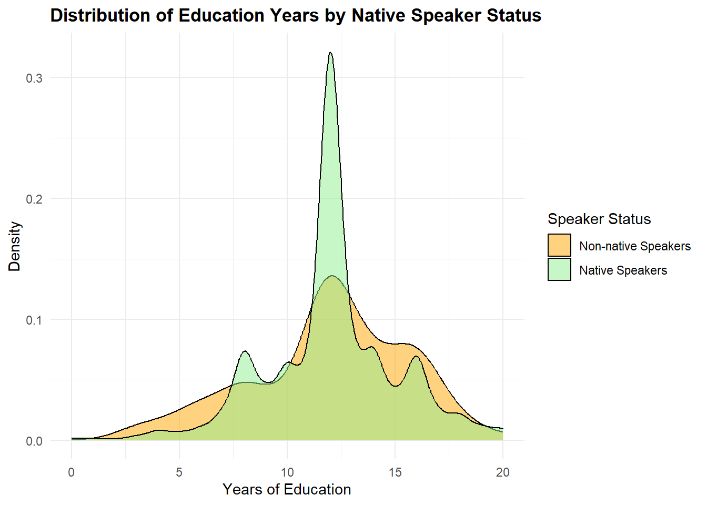

ggplot(divorce_margarine, aes(x = margarine_consumption_per_capita, y = divorce_rate_maine)) +geom_point() +geom_smooth(method ="lm", se =TRUE) +labs(title ="Correlation between Margarine Consumption and Divorce Rates in Maine",x ="Margarine Consumption per Capita",y ="Divorce Rate in Maine") +theme_minimal()
`geom_smooth()` using formula = 'y ~ x'

Discussion
Would an increase in the preference for margarine lead to skyrocketing divorce rates?
The correlation coefficient between margarine consumption and divorce rates in Maine is extremely high (r = 0.993), suggesting a very strong positive relationship. However, this is a perfect example of why we must remember that correlation does not imply causation.
This is a spurious correlation, where two variables appear to be related but have no meaningful causal connection. Both trends might be independently influenced by other societal changes during the same time period.
Part 2
Load data
data(GSSvocab)
Filter for the year 1978 and remove rows with missing values
ggplot(vocab_data, aes(x = educ, y = vocab)) +# Replace geom_point with geom_countgeom_count(aes(size =after_stat(n)), alpha =0.6) +geom_smooth(method ="lm", se =TRUE, color ="steelblue") +# Add size scalescale_size_area(max_size =6, name ="Number of\nObservations") +labs(title ="Relationship between Education and Vocabulary Score",subtitle ="Point size indicates number of observations at each combination",x ="Years of Education",y ="Vocabulary Score") +theme_minimal() +theme(legend.position ="right",plot.title =element_text(face ="bold"),plot.subtitle =element_text(size =9))
`geom_smooth()` using formula = 'y ~ x'

Model
Let’s create the model
model1 <-lm(vocab ~ educ, data = vocab_data)summary(model1)
Call:
lm(formula = vocab ~ educ, data = vocab_data)
Residuals:
Min 1Q Median 3Q Max
-7.1233 -1.1608 0.0542 1.0917 5.6243
Coefficients:
Estimate Std. Error t value Pr(>|t|)
(Intercept) 1.23567 0.19957 6.192 7.7e-10 ***
educ 0.39251 0.01606 24.443 < 2e-16 ***
---
Signif. codes: 0 '***' 0.001 '**' 0.01 '*' 0.05 '.' 0.1 ' ' 1
Residual standard error: 1.885 on 1475 degrees of freedom
Multiple R-squared: 0.2883, Adjusted R-squared: 0.2878
F-statistic: 597.5 on 1 and 1475 DF, p-value: < 2.2e-16
The linear regression model examining the relationship between years of education and vocabulary scores shows a positive relationship. The model can be expressed as:
Vocabulary Score = 1.2357 + 0.3925 × (Years of Education)
This means:
Base Level (Intercept = 1.2357): This represents the theoretical vocabulary score for someone with zero years of education
Education Effect (Slope = 0.3925):
For each additional year of education, the vocabulary score increases by 0.3925 points
This effect is highly significant (p < 2e-16)
The small standard error (0.016) indicates high precision in this estimate
Model Fit:
The model explains 28.8% of the variance in vocabulary scores (Adjusted R² = 0.2878)
The F-statistic (597.5, p < 2.2e-16) indicates the model is significantly better than no model
Residuals range from -7.12 to 5.62, suggesting some notable outliers
The positive slope aligns with our intuitive understanding that more years of formal education typically is associated with a broader vocabulary exposure and acquisition.
However, as always we must keep in mind that correlation does not equal causation. These results, statistically speaking, indicate as much, that the education level attained depends on the vocabulary, as vice versa.
Analysis 2: Vocabulary ~ education + nativeBorn
# Create faceted visualization with different colorsggplot(vocab_data, aes(x = educ, y = vocab)) +# Add count-sized points with transparencygeom_count(aes(size =after_stat(n), color = nativeBorn), alpha =0.6) +# Add regression line matching point colorsgeom_smooth(aes(color = nativeBorn), method ="lm", se =TRUE) +# Facet by native speaker statusfacet_wrap(~nativeBorn, labeller =labeller(nativeBorn =c("no"="Non-native Speakers", "yes"="Native Speakers"))) +# Customize the size and color scalesscale_size_area(max_size =6, name ="Number of\nObservations") +scale_color_manual(values =c("no"="orange", "yes"="lightgreen"), guide ="none") +labs(title ="Vocabulary Scores by Education and Native Speaker Status",subtitle ="Point size indicates number of observations at each combination",x ="Years of Education",y ="Vocabulary Score") +theme_minimal() +# Improve theme elementstheme(legend.position ="right",plot.title =element_text(face ="bold"),plot.subtitle =element_text(size =9),strip.text =element_text(face ="bold"),strip.background =element_rect(fill ="gray95", color =NA))
`geom_smooth()` using formula = 'y ~ x'

Model
Let’s create the model
model2 <-lm(vocab ~ educ + nativeBorn, data = vocab_data)summary(model2)
Call:
lm(formula = vocab ~ educ + nativeBorn, data = vocab_data)
Residuals:
Min 1Q Median 3Q Max
-7.162 -1.200 0.015 1.231 5.803
Coefficients:
Estimate Std. Error t value Pr(>|t|)
(Intercept) 0.62803 0.27651 2.271 0.02327 *
educ 0.39222 0.01601 24.499 < 2e-16 ***
nativeBornyes 0.65032 0.20551 3.164 0.00159 **
---
Signif. codes: 0 '***' 0.001 '**' 0.01 '*' 0.05 '.' 0.1 ' ' 1
Residual standard error: 1.879 on 1474 degrees of freedom
Multiple R-squared: 0.2931, Adjusted R-squared: 0.2921
F-statistic: 305.6 on 2 and 1474 DF, p-value: < 2.2e-16
Model 2 suggests both education and native speaker status are associated with vocabulary scores. The model can be expressed as:
The effect of education remains almost identical to model 1 (previously 0.3925)
Highly significant (p < 2e-16) with a small standard error (0.016)
This consistency suggests that education’s effect is robust even when controlling for native speaker status
Native Speaker Effect (0.6503):
Being native born increases the vocabulary score by approximately 0.65 points
This effect is statistically significant (p = 0.00159)
The standard error (0.206) indicates good precision in this estimate
The advantage is equivalent to about 1.7 years of education (0.6503/0.3922)
Base Level (Intercept = 0.6280):
This represents the predicted vocabulary score for a non-native speaker with zero years of education
Model Fit:
Explains 29.2% of variance (Adjusted R² = 0.2921), slightly better than model 1
Highly significant overall (F = 305.6, p < 2.2e-16)
Residuals range from -7.16 to 5.80, similar to model 1
Adding native speaker status improved the model fit, but only marginally
The model suggests that both education and native speaker status contribute to vocabulary knowledge, with native speakers having a considerable advantage equivalent to nearly two years of additional education. This also aligns with the intuition that native speakers obviously have an advantage in vocabulary measures.
However, we must keep in mind the limitation of statistical modelling. The results are subject to the constraint defined in the modelling. If we assume that the slope associated with education also vary based on whether its a native born or not, the model does not allow for a varying slope.
Another interesting note is that the data set is very imbalanced. It is clear from the visualization, that there a way more native born in the data set than non-native.
Analysis 3: Does education depend on whether they are natives?
First, let’s visualize the relationship between native status and education
ggplot(vocab_data, aes(x = educ)) +# Create density plots for each groupgeom_density(aes(fill = nativeBorn), alpha =0.5) +# Customize colors and labelsscale_fill_manual(values =c("no"="orange", "yes"="lightgreen"),labels =c("Non-native Speakers", "Native Speakers"),name ="Speaker Status") +labs(title ="Distribution of Education Years by Native Speaker Status",x ="Years of Education",y ="Density") +theme_minimal() +theme(legend.position ="right",plot.title =element_text(face ="bold"))

Interestingly, the distribution shows that there is flatter distribution for non-native speakers, meaning that they either get less than average education, or more than average, compared to native speakers. This bimodal pattern might reflect different immigrant groups - perhaps those arriving with high educational qualifications (e.g., for skilled work or advanced studies) versus those with fewer educational opportunities.
Native speakers have a large concentration around 12 years of total education, and is therefore a more homogeneous group in terms of level of education. This peak at 12 years likely corresponds to high school completion, which is a common educational milestone in the United States (the data set was distributed by National Opinion Research Center of the University of Chicago)
Model
Let’s model an interaction effect:
model3 <-lm(vocab ~ educ * nativeBorn, data = vocab_data)summary(model3)
Call:
lm(formula = vocab ~ educ * nativeBorn, data = vocab_data)
Residuals:
Min 1Q Median 3Q Max
-7.1554 -1.2049 0.0149 1.2347 5.9857
Coefficients:
Estimate Std. Error t value Pr(>|t|)
(Intercept) 0.35394 0.68780 0.515 0.607
educ 0.41510 0.05496 7.553 7.45e-14 ***
nativeBornyes 0.95000 0.71855 1.322 0.186
educ:nativeBornyes -0.02501 0.05745 -0.435 0.663
---
Signif. codes: 0 '***' 0.001 '**' 0.01 '*' 0.05 '.' 0.1 ' ' 1
Residual standard error: 1.88 on 1473 degrees of freedom
Multiple R-squared: 0.2932, Adjusted R-squared: 0.2917
F-statistic: 203.7 on 3 and 1473 DF, p-value: < 2.2e-16
The interaction model suggests the following:
Education Effect (0.41510):
For non-native speakers, each year of education increases vocabulary score by 0.415 points
This effect is highly significant (p < 0.001)
The effect is slightly stronger than in our previous model without interaction
Native Speaker Effect (0.95000):
Being native-born appears to add 0.95 points to the vocabulary score
However, this effect is not statistically significant (p = 0.186)
This represents the difference at zero years of education
Interaction Term (-0.02501):
The negative coefficient suggests that the effect of education is slightly weaker for native speakers
However, this interaction is not statistically significant (p = 0.663)
The small coefficient (-0.025) indicates minimal practical difference in education’s effect between groups
Model Fit:
The model explains about 29.3% of the variance in vocabulary scores (R² = 0.2932)
The overall model is highly significant (F-statistic p < 2.2e-16)’
Conclusion
Given these results, the interaction term does not appear to be necessary in the model. The non-significant interaction (p = 0.663) with a very small coefficient (-0.025) suggests that education affects vocabulary similarly for both native and non-native speakers. Therefore, model 2 (without interaction) would be more appropriate than model 3.
The principle of parsimony might suggest using the even simpler model 1 (education only). However the native speaker variable in model 2 is both statistically significant (p = 0.00159) and practically meaningful (effect equivalent to 1.7 years of education), while adding minimal complexity to the model. The stability of the education coefficient across models (approximately 0.39) also supports this choice, suggesting that model 2 captures an independent effect of native speaker status without disturbing the robust relationship between education and vocabulary.